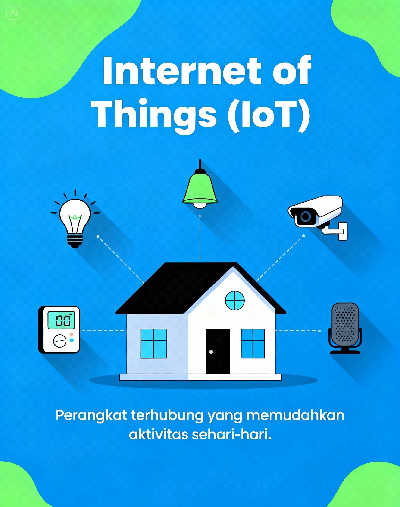

Literasi Digital untuk Pemuda
Menavigasi Peluang dan Tantangan di Era Disrupsi Teknologi.
Materi Dasar Literasi Digital
Tiga pengetahuan utama agar kita dapat menggunakan teknologi secara cerdas dan bertanggung jawab.
Etika & Jejak Digital
Semua aktivitas online akan tersimpan sebagai jejak digital. Maka penting untuk bersikap sopan, bijak, dan tidak membagikan hal yang dapat merugikan diri sendiri maupun orang lain.
Keamanan & Privasi Online
Belajar melindungi password, data pribadi, dan akun dari penyalahgunaan dengan cara menggunakan keamanan ganda, tidak sembarang klik link, dan berhati-hati saat berbagi data.
Literasi Informasi & Anti Hoax
Mampu menganalisis informasi sebelum mempercayai atau membagikannya. Selalu cek sumber, kebenaran, dan tujuan dari informasi agar tidak ikut menyebarkan berita palsu.
Panduan Keamanan Digital
Tips praktis untuk melindungi data pribadi Anda di dunia maya.
Gunakan Password Kuat & Unik
Kombinasikan huruf besar, kecil, angka, dan simbol. Jangan gunakan password yang sama untuk semua akun.
Aktifkan Autentikasi Dua Faktor (2FA)
Lapisan keamanan tambahan selain password, biasanya menggunakan kode OTP dari HP Anda.
Waspada Phishing
Jangan sembarangan mengklik link atau lampiran dari email atau pesan yang mencurigakan.
Galeri Poster Edukasi
Visualisasi data dan informasi penting seputar literasi digital.





Tentang Misi Kami
Mengapa website ini ada dan apa tujuan kami untuk Anda.
Website ini adalah ruang belajar digital bagi pemuda Indonesia.
Tujuan kami sederhana: membantu Anda menjadi generasi yang lebih
siap, kritis, dan cerdas dalam menghadapi era
disrupsi.
Dengan pengetahuan digital yang kuat, Anda bisa lebih
aman, kreatif, dan percaya diri menavigasi masa
depan yang terus bergerak cepat.
Literasi Digital
Memahami cara menggunakan dan menganalisis informasi digital.
Keamanan Siber
Melindungi data pribadi dan waspada terhadap ancaman online.
Teknologi Masa Depan
Memahami perkembangan kecerdasan buatan (AI) dan transformasi perdagangan digital melalui E-commerce sebagai fondasi teknologi masa depan.